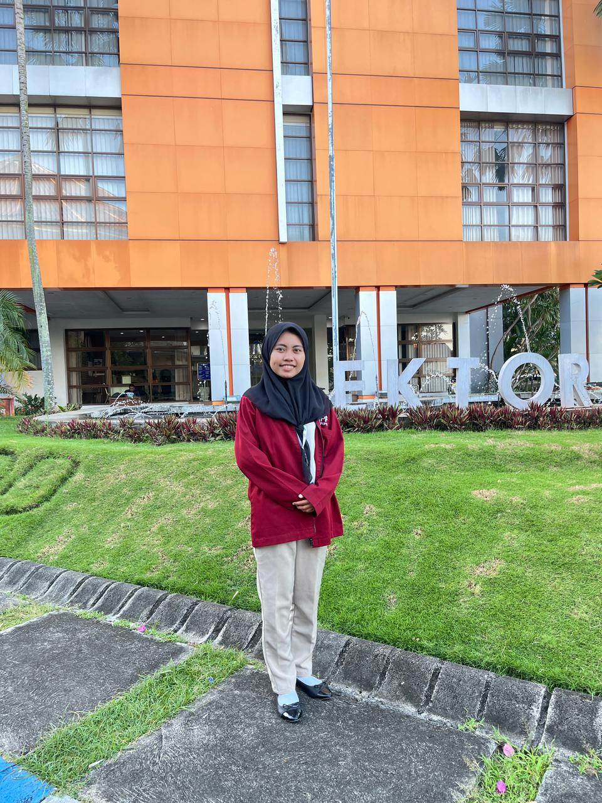
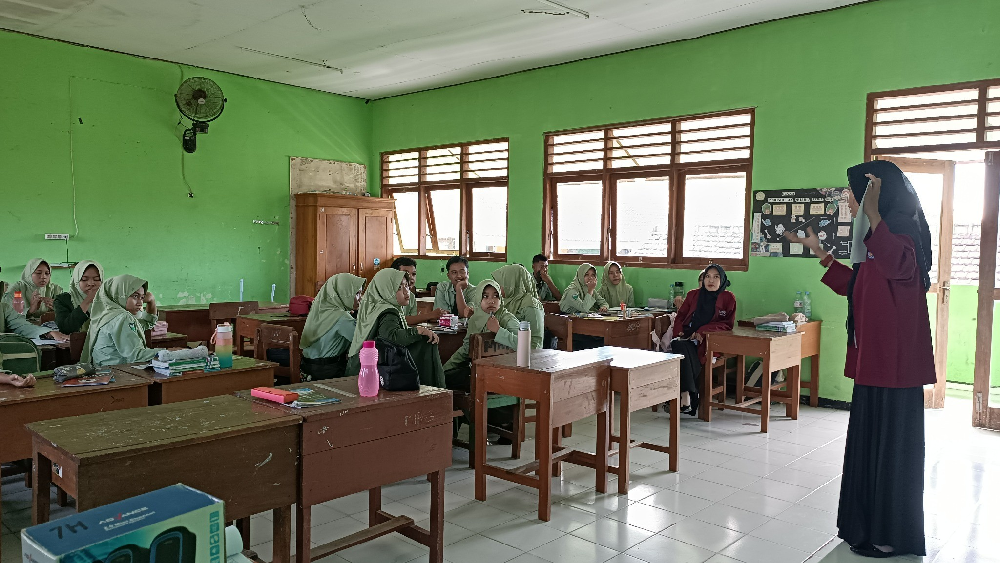
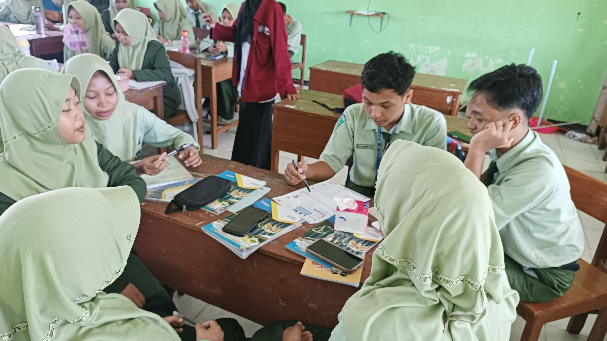
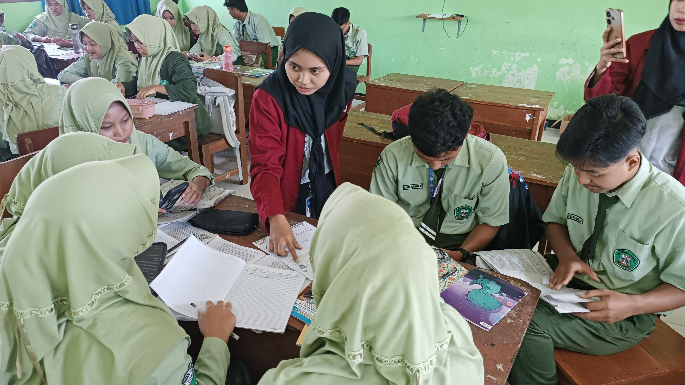
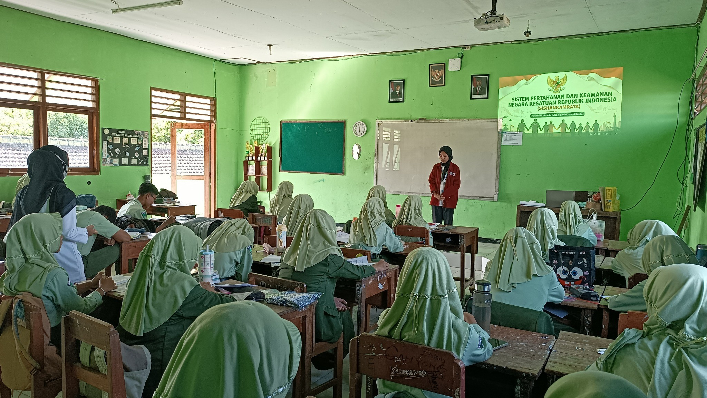
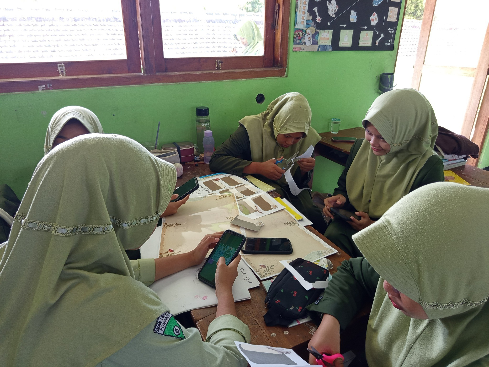

Penempatan
SMAN 1 Badegan
Sasaran
Kelas Fase E

Ummul Karima, S.Pd.
Pendidikan Pancasila
Membangun
Karakter
Guru Profesi.
E-Portfolio ini adalah refleksi awal sebagai fondasi dasar karakter keguruan saya, mencakup analisis mendalam terhadap praktik mengajar selama 3 siklus PPL di SMAN 1 Badegan.
Lokasi Pendidikan & Praktik
Universitas Muhammadiyah Ponorogo
Pendidikan PPG Prajabatan
Jl. Budi Utomo No.10, Ronowijayan, Kec. Siman, Kabupaten Ponorogo, Jawa Timur 63471
SMAN 1 Badegan
Lokasi Praktik PPL (Fase E)
Jl. Ponorogo - Wonogiri No.4, Karangan, Kec. Badegan, Kabupaten Ponorogo, Jawa Timur 63455
Timeline Siklus





28 APRIL
2026
Tahap Identifikasi
Pemahaman Hak & Kewajiban






05 MAY
2026
Tahap Pengembangan
Implementasi Sishankamrata


12 MAY
2026
Tahap Evaluasi
Diseminasi & Keberlanjutan
Fokus Pengembangan Siklus
Siklus 1: Identifikasi
Menghadapi tantangan kepasifan murid pada materi abstrak. Fokus pada visualisasi materi dasar (Hak & Kewajiban) melalui Canva dan Asesmen Formatif Wordwall.
Siklus 2: PjBL & Kolaborasi
Menyiasati kelas besar (34 murid) melalui Proyek Mind Mapping tentang Sishankamrata. Murid dibagi menjadi 3 peran spesifik: TNI, POLRI, dan Rakyat.
Siklus 3: Aksi & Refleksi
Pelaksanaan presentasi interaktif menggunakan metode Gallery Walk dan penulisan jurnal refleksi aksi nyata bela negara menggunakan Sticky Notes.
Aktivitas Pembelajaran
Dokumentasi berikut menunjukkan implementasi dari filosofi dan pendekatan mengajar saya di SMAN 1 Badegan. Saya merancang pembelajaran yang berpusat pada murid melalui diskusi interaktif, presentasi kelompok, dan penggunaan media inovatif untuk membangun pemahaman konsep Pendidikan Pancasila secara kontekstual.
Guru yang baik adalah fasilitator yang mampu memberi ruang bagi murid untuk mengeksplorasi potensi terbaiknya dalam suasana kelas yang inklusif dan menyenangkan.
Aktivitas Diskusi Kelas